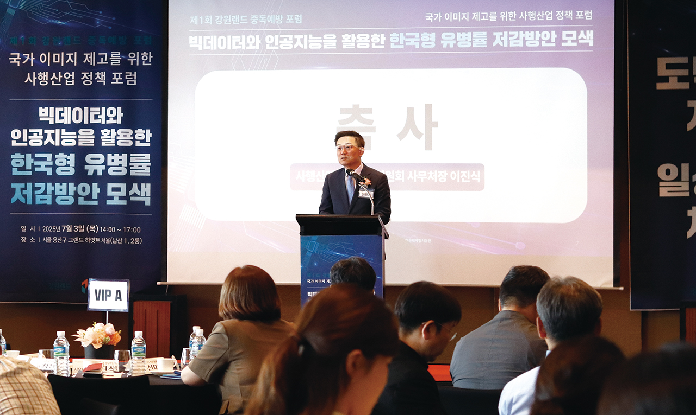
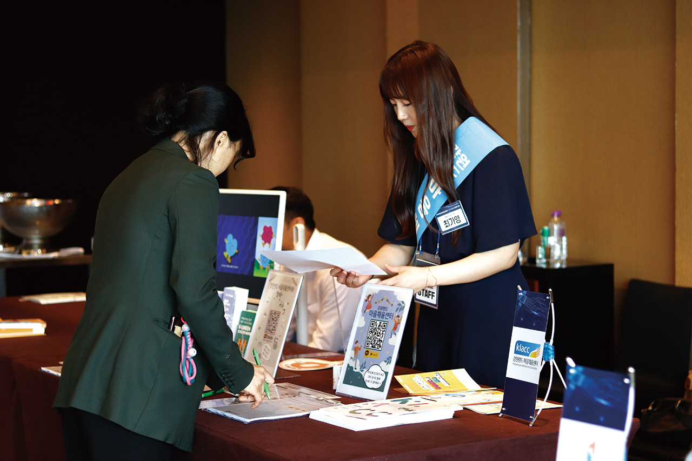
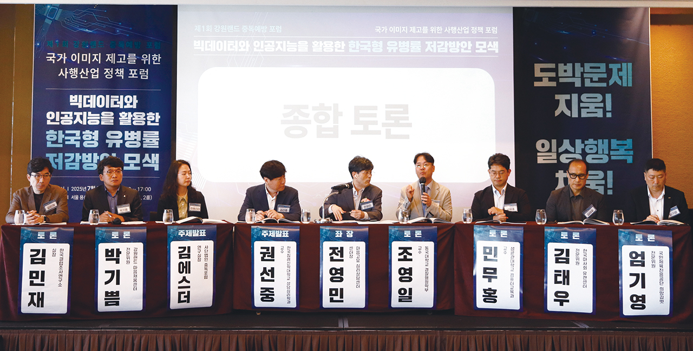
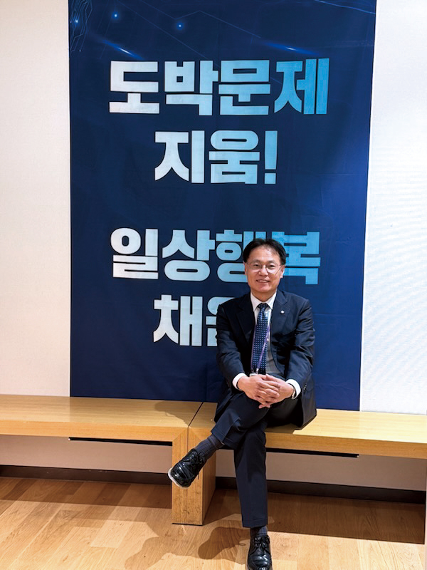
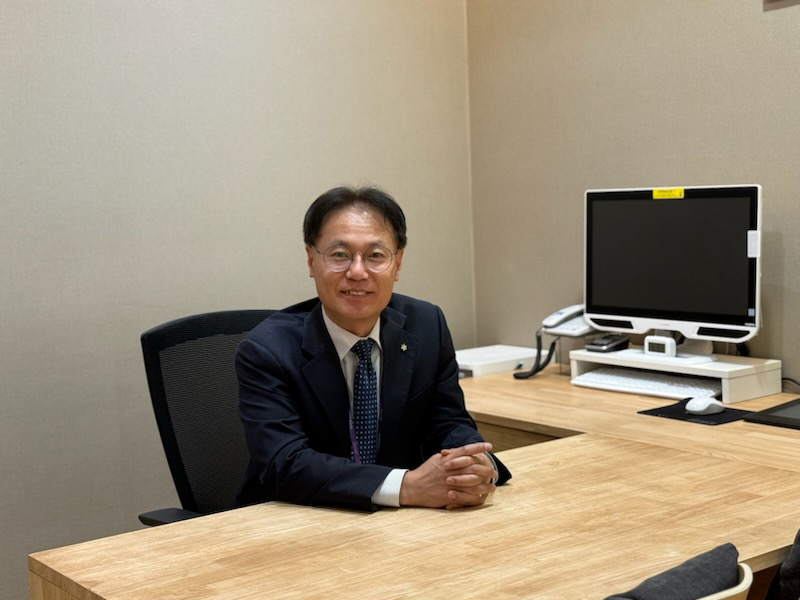

글. 김성민 사진.김성민
지난 7월 3일, 서울 그랜드하얏트 호텔에 도박중독 분야 전문가 100여 명이 모였다. 강원랜드와 한국도박문제예방치유원이 공동으로 개최한 ‘제1회 중독예방 포럼’이 열린 것이다. 이날 포럼의 화두는 명확했다. 빅데이터와 AI로 만드는 ‘디지털 백신’이 과연 도박중독의 해법이 될 수 있을까? 첨단기술이 제시하는 예방의 새로운 가능성, 그 현장을 들여다봤다.

사행산업통합감독위원회가 발표한 2024년 조사 결과는 충격적이었다. 국내
주요 사행사업기관의 유병률은 강원랜드 54.0%, 마사회 50.9%, 경정 34.9%,
경륜 33.8%로 나타났다. 카지노가 경제의 중심축인 마카오의 유병률이
22.2%인 것과 비교하면, 우리나라의 상황이 얼마나 심각한지 단번에 알 수
있다. 성인 인구의 5.1%가 도박중독 유병률을 보이며, 중위험군만 223만
명에 달한다는 사실도 우려스럽다. 성별로는 남성이 6.8%로 여성 3.5%보다
두 배 가까이 높았고, 소득이 높을수록 유병률이 증가하는 경향을 보였다.
이제는 개별 기관의 노력만으로는 한계가 분명하다. 단순한 금지와 규제를
넘어, 첨단기술을 활용한 과학적 예방 시스템으로 패러다임을 전환해야
한다는 것이 포럼의 핵심 메시지였다. 정부기관, 사행산업 사업자, 학계가
한자리에 모인 것도 이러한 위기의식에서 출발했다. 전 세계 카지노 사업자
중 유일하게 중독예방 전문기관을 운영하는 강원랜드가 이번 포럼을 주최한
것은 그래서 의미가 남다르다.

포럼은 ‘도박중독 없는 대한민국, 우리가 함께 가꾼다!’라는 슬로건 아래
시작됐다. 임국희 작가의 붓글씨 퍼포먼스와 주요 기관 대표들의
공동서명으로 막이 올랐다.
이날 가장 주목받은 것은 한국침례신학대학교 권선중 교수의 발표였다. 권
교수는 빅데이터 기반 도박중독 디지털 백신 및 유병률 조사·추적 체계
개발 방향을 제시했다. 기존의 설문조사 방식에서 벗어나 실제 행동
데이터를 분석해 중독 위험군을 사전에 찾아내는 혁신적 접근법이었다.
특히 이용 금액의 경우 단순히 ‘얼마나’가 아닌 ‘어떻게’ 썼는지를 정밀
분석하면 예측 모형 개발이 가능하다는 점이 인상적이었다. 체류 시간,
방문 횟수, 이용 패턴 등을 종합적으로 분석해 위험 징후를 조기에 포착할
수 있다는 설명이다. 이는 사후 치료에서 사전 예방으로의 완전한 패러다임
전환을 의미한다.
청소년 도박문제 예방 교육은 특히, 불법 온라인 도박의 위험성을 알리는 것에 중점을 두었다. 스마트폰으로 인해 불법 온라인 도박 사이트로의 접근이 매우 용이해졌고, 그로 인해 피해가 점점 심각해지고 있기 때문이다. 조상희 상담사는 다양한 시청각 자료를 활용해 온라인 도박 불법 사이트의 특징, 이러한 사이트에 접근되는 방식, 그리고 그로 인해 발생할 수 있는 법적 문제와 재정적 피해에 대한 구체적 사례를 학생들에게 소개했다.

스위스 취리히 대학의 안드레아스 마이어 연구원과 중독포럼 김에스더
연구실장의 발표도 큰 관심을 받았다. ‘Win Back Control’이라는 e-헬스
프로그램은 개인의 기질, 심리 상태, 생체 신호 데이터를 활용한 AI
알고리즘으로 도박 행동을 예측하고 맞춤형 개입을 제공한다. 한국과
스위스 간 국제 공동연구의 성과로, 글로벌 협력의 중요성을 보여주는
사례였다.
종합토론에서는 실질적 연대의 필요성이 강조됐다. 이진식 사감위
사무처장은 “오늘 포럼은 단순한 문제 제기를 넘어 데이터 기술을 기반으로
한 정책 혁신의 출발점이 될 것”이라며 “빅데이터와 인공지능을 접목한
조기예측과 조기개입 체계는 도박문제의 예방과 치유 패러다임을
실질적으로 전환하는 열쇠가 될 것”이라고 평가했다.
박기쁨 강원랜드 마음채움센터 전문위원은 “국가 사행산업 중독 유병률을
낮추기 위해서는 기관 간 공동연구가 필수적”이라며 “건전한 여가레저로서
산업이 자리잡을 수 있도록 실질적인 연대가 필요하다”고 강조했다.
최철규 강원랜드 대표이사 직무대행은 “이번 포럼이 중독예방을 통한 국가
유병률 저감 방안과 사행산업 정책 개선방향 연구의 시작점이 되길
기대한다”며 “앞으로도 강원랜드는 국민이 안심하고 이용할 수 있는
사행산업 환경을 조성하고, 건전 게임문화 확립을 위해 최선을 다하겠다”고
밝혔다.
강원랜드는 이미 저위험 카지노게임 가이드라인 ‘10·4·10’ 개발 및 홍보,
도박중독 자가진단, 전문위원 상담 지원, 청소년 아카데미 운영,
한국심리학회 연구지원 등 다양한 중독예방 활동을 펼쳐왔다. 출입일수
영구선택 제도를 통해 과몰입을 막고, 전국민 대상 인식개선 캠페인도 진행
중이다.
이제 여기에 빅데이터와 AI라는 첨단기술의 날개를 달았다. 정례화될 이
포럼을 통해 실질적인 도박문제 저감을 위한 연대가 구축되고, 연구와
정책이 유기적으로 연결되는 선순환 구조가 만들어질 것으로 기대된다.
중독은 개인의 문제가 아닌 우리 모두가 함께 해결해야 할 사회적 과제다.
도박중독 없는 건강한 대한민국을 향한 의미 있는 첫걸음이 시작됐다.

국내에는 카지노, 경마, 경륜, 경정, 복권, 스포츠토토, 소싸움 등 7개 종목의 사행산업이 정부 관리하에 운영되고 있습니다. 이들은 국민의 여가생활 선용을 위해 합법적으로 운영되는 것이죠. 문제는 부작용이 심각하다는 것입니다. 2024년 사행산업통합감독위원회 실태조사에 따르면 국내 사행사업이용객 유병률은 32.6%로, 마카오 등 사행산업이 매우 성행하는 해외 국가와 비교해도 높은 수준입니다.
저희 KLACC은 이번 행사를 통해 이 문제를 공론화시키고자 관련된 국내 기관을 모아 연대의 장을 마련했습니다. 궁극적으로 KLACC은 중독으로부터 고객을 보호하는 것을 목적으로 하고 있습니다. 강원랜드 고객 대상으로는 각종 제도와 인센티브를 활용하여 보호하고 있고, 일반국민 대상으로는 공익광고 및 교육콘텐츠 배포, 청소년 아카데미 운영, 관련 학술대회 연구활동 지원 등 폭넓은 공익활동을 펼치고 있습니다.
강원랜드는 국내 사행사업기관 중 유일하게 고객출입기록을 보관하고 있습니다. 현재도 냉각기제도, 사전예방제도 등 출입일수 기준으로 고객을 보호하고 있죠. 권 교수님 발표는 출입기록 외 하이원포인트 사용기록 등 활용 가능한 데이터의 범주를 넓히고, 생성형 AI 기술을 활용한다면 문제성 고객의 발굴, 시의적절한 개입 및 정책수립 등의 중독 예방 기능을 강화할 수 있다는 것입니다. 저희는 올해 7월부터 월 단위 카지노이용실태 조사를 실시하여 더욱 촘촘하게 데이터를 수집하고 있습니다. 권 교수님이 제안해주신 내용은 디지털혁신실과 함께 검토할 계획입니다.

사행산업기관의 대표들이 이렇게 많이 모인 행사가 언제 있었는지 모르겠습니다. 처음에는 각 기관에서 어떻게 받아들일지 걱정했는데, 막상 연락드리니 본 행사의 취지를 동의해주시고 적극적으로 참여해주셔서 감사합니다. 공동토론에서 박기쁨 상담전문위원이 사행산업자 공동 유병률 저감 연구용역을 제안했는데, 일부 기관은 긍정적인 피드백을 주셨습니다. 각 사행산업 종목별로 법적 근거와 환경이 모두 다르기 때문에 많은 대화가 필요하지만, 저희는 제2회, 제3회 포럼을 계속 개최하여 실질적 정책연대의 장으로 발전시켜나갈 예정입니다.
저희 KLACC은 중독예방을 위한 많은 활동을 하고 있지만, 사행산업 자체에 대한 국민의 시각을 긍정적으로 바꾸는 것은 쉽지 않습니다. 회사 내 ESG상생협력실 등에서 카지노 운영을 통해 벌어들인 재원으로 상당한 규모의 공익활동을 하고 있지만, 과거 조사결과를 보면 이것만으론 부정적 이미지가 상쇄되지 않더군요. 다만 앞으로 정부부처와 모든 사행사업 기관들이 힘을 모아 중독예방과 치유, 재활에 진심으로 노력하고, 관광 콘텐츠 투자와 인프라가 강화된다면 언젠가는 자연스럽게 사회적 인식이 변화할 것이라고 생각합니다. 이를 위해 저희 KLACC이 앞장서서 달리도록 하겠습니다.